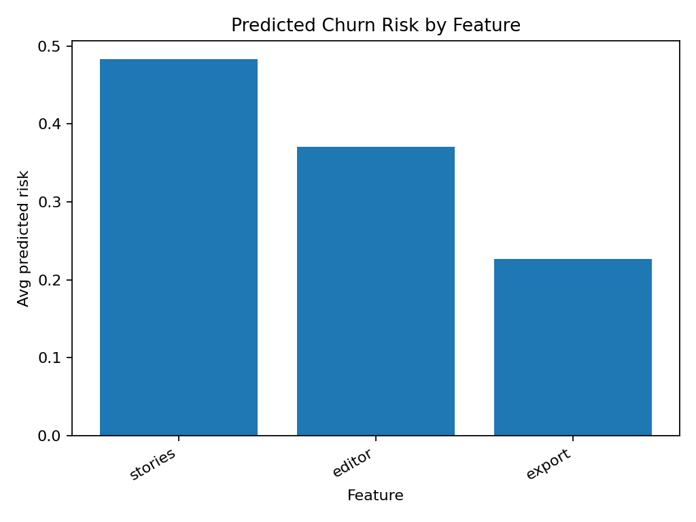

Predictive UX Feedback Report
Generated 2025-10-20 22:02 UTC
MVP • Directional Insights
Directional insights only — sample size below 200.
Overall Model
AUC: 1.000
Classification report/notes:
precision recall f1-score support
0 1.00 1.00 1.00 1
1 1.00 1.00 1.00 1
accuracy 1.00 2
macro avg 1.00 1.00 1.00 2
weighted avg 1.00 1.00 1.00 2
Model: Regularized logistic regression on TF-IDF(text) + SUS/NPS + feature segments.
Dataset & Guardrails
Rows: 5 | Churn=1: 2 | Segments: 3
- Privacy: emails/URLs/phones masked in comments; nothing stored unless you download.
- Directional until larger sample or stratified experiments are run.
- Deterministic seed for reproducibility (42).
Next 3 Bets
- Improve stories onboarding & discoverability — 2 users; highest predicted churn risk segment (0.48). (Predicted impact: High (directional))
- Address recurring text themes — Top keywords from comments highlight core frustrations to target. (Predicted impact: Medium–High (directional))
- Close benchmark gaps (SUS/NPS) — Average NPS/SUS by feature shows where polish will have outsized impact. (Predicted impact: Medium (directional))
Risk by Segment
Avg predicted risk (0–1) per segment; higher = riskier. Includes avg NPS/SUS per feature.

Top Risk Signals (Model)
Words/flags most associated with higher churn risk (model weights).
Top Frustration Keywords (TF‑IDF)
Frequent, distinctive tokens among churn‑labeled comments.
Representative Quotes (High-Risk Users)
- u004 (stories) — risk 0.81: “Couldn’t find settings; navigation feels messy.”
- u002 (editor) — risk 0.53: “Editor crashes on large files. I switched tools.”
- u003 (export) — risk 0.23: “Export is slow; team loves collaboration though.”
- u005 (editor) — risk 0.21: “Great docs; dark mode saved my eyes.”
- u001 (stories) — risk 0.16: “Love the simplicity, but onboarding was confusing.”
© MVP — For portfolio/demo. Treat as directional until sample ≥ 500 rows.